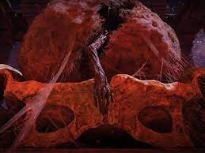
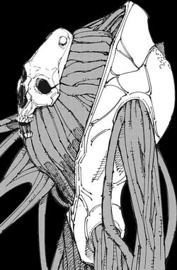
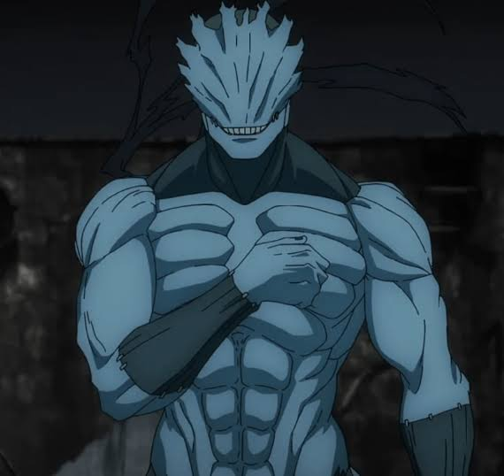
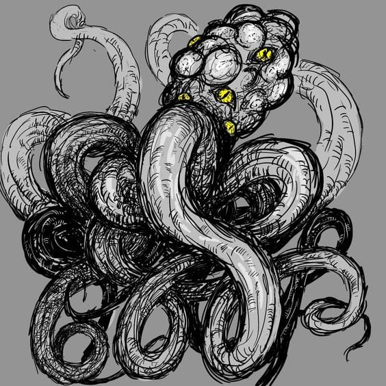
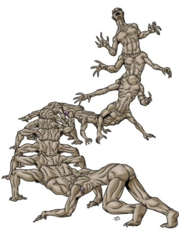

-
Utero Vingativo #001
Um utero que possui por volta de quatro metros de altura e é totalmente feito de carne e musculo. A mão que está saindo do seu meio pertence ao feto que a mulher que se tornou essa monstruosidade tanto desejou. Ele é uma criatura amaldiçoada que cumpriu o seu dever de matar a pessoa que havia feito mal para ela, e agora ela vive apenas para matar e consumir.
-
Amor Indioso #002
Apos ser assasinado por sua mulher o mangaka de Shark Punch se tornou uma criatura amaldiçoada com duas fases; Sua primeira fase é um casulo de carne com um cránio deformado no centro. Ele está ligado por nervos dentro do seu Dominio que se manifestou na sua antiga casa. Para manifestar sua segunda forma, ele absorve nutrientes e começa o processo de desenvolvimento de um feto.
-
Amor Indioso V2 #003
O Amor Indioso após conseguir os nutrientes necessario absorvendo o sangue do seu alvo, se torna extremamente forte e resistente. A cada golpe acertada, a força da sua alma se intensifica. Fora que seu corpo desenvolveu laminas feitas do seu osso. O motivo para o assassinato do mangaka foram influenciados por Kenjiro Yamato, que possuia a intenção de criar uma nova originaria, porém o experimento foi um fracasso e apenas um resquício do Utero Vingativo, ou como é chamado agora : Utero Amaldiçoado se manteve vivo.
-
Espemermatozoide Amaldiçoado #004
Sendo uma criatura não planejada, o espermatozoide amaldiçoado se manifestou com a morte da assassina do mangaka, que estava grávida. Seu feto se tornou uma criatura vingativa e conscientes que se metamorfa em outros seres com o intuito de viver.
-
Kemonomimi #005
Após serem costurados uns nos outros, a antiga banda de Hana Osaka se tornou uma centopeia humana por conta da insanidade de Koda Yoshida. Um garoto com uma habilidade de imortalidade que possuia um rancor irracional da vocalista da banda "Kemonomimi" Ele se enquadra como uma criatura sem registro que partilha da mesma consciência e está em infinita agonia, não sendo agressiva.